THE BRAIN BRAKE
V9 DRAFT. Scene 1 is being rebuilt from scratch and everything on this site is part of that draft. The V7 artwork is not gone: it is stored, it is still what the film is cut from, and any of it can be pulled back and modified rather than drawn again. If an older picture is better, we go back to it. Nothing here is in the film until Marko says so.
The frame
A two minute film for the Breakthrough Junior Challenge. A fourteen year old asks why a runner with nothing left can still find one more sprint. Everything here is for the animation.
Everything is 2731 x 1536, true 16:9. Key light is camera right, always.
Nothing here is in the film until Marko says so. The status under each picture says where it stands.
Video files are on GDrive, top right of every page.
Scenes
- SC0Titlenothing yet
- SC1The mysterynothing yet
- SC2The old theorynothing yet
- SC3The full tanknothing yet
- SC4The gatekeepernothing yet
- SC5The experimentnothing yet
- SC6The releasenothing yet
- SC7The verdictnothing yet
- SC8The invitationnothing yet
- SC10The old theory on the boardnothing yet
- SC11The new theory and the keynothing yet
- SC12It is a settingnothing yet
- SC13The keynothing yet
- SC14End creditsnothing yet
- SC16The housenothing yet
- SC17The front doornothing yet
- SC18The skull doornothing yet
What changed
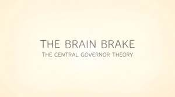
Title card. Front of both versions.
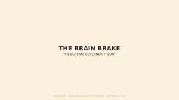
Placeholder credit card.
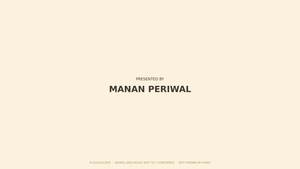
Placeholder credit card.
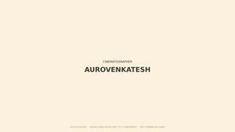
Placeholder credit card.
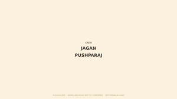
Placeholder credit card.
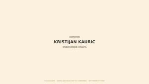
Placeholder credit card.
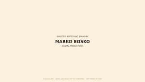
Placeholder credit card.
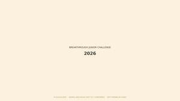
Placeholder credit card.
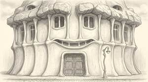
note pending
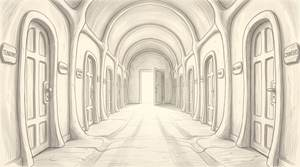
note pending
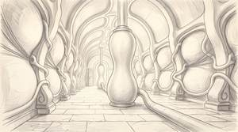
note pending
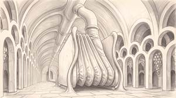
note pending
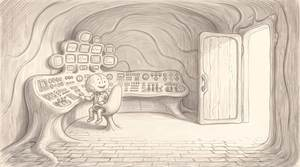
note pending
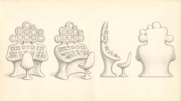
Four views of the grown desk and its chair: front, three quarter, side, rear. THE SIDE VIEW IS THE USEFUL ONE, it shows the desk and the floor as a single continuous curve, which is what you need to redraw it from any angle. Dials and levers sit down in shallow hollows, never bolted onto a panel, and nothing has a rivet, bolt, flange or straight edge. The chair is a shell on a single stem. ONE DIFFERENCE FROM THE ROOM: this sheet draws the screens as part of the console. In the room they are cell-like openings in the clay wall behind it. Keep them in the wall.
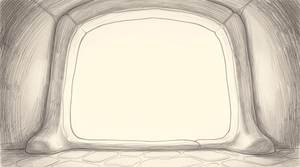
note pending

THE OLD THEORY. Manan's board, and only his. The arm, the fuel gauge at EMPTY, and three lines each underlined: FATIGUE IS IN THE MUSCLE, THE FUEL RUNS OUT, THE BODY STOPS. This is the 1923 answer he arrives with, having read it in a book. BLACKBOARD AND WHITE CHALK ON PURPOSE: Coach Brain answers on a whiteboard in black marker, and the reversal of surface and mark is what the audience feels before they follow the argument. The chalk draws itself as he speaks, RSA Animate style, so the board is never revealed finished. THIS IS THE FINISHED BOARD. An attempt to fill the lower right with a collapsed runner was rejected, so the empty stretch stays empty and the chalk simply stops there.
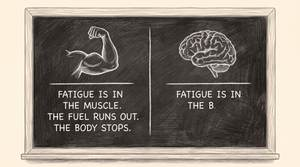
Rejected. It drew both theories on one split board, which was a design superseded hours earlier by the inversion. Two causes: the reference was the control room, whose symmetrical console and screen bank pull toward a two panel layout, and the prompt said 'nothing on the right', a negation, which adds the thing.
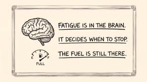
THE NEW THEORY. Coach Brain's answer, and THE INVERSION IS THE POINT: same layout, same three lines, same gauge as shot 10, with every value reversed. Blackboard and white chalk becomes whiteboard and black marker. Measured, mean luminance 135 against 226. THE GAUGE CARRIES THE ARGUMENT: the same instrument in both frames with the needle moved from EMPTY to FULL says the fuel was always there without a word being spoken. Cut one to the other and the audience understands before they have read the sentences. The lower right is left empty in both, because the marker is still going while he talks.
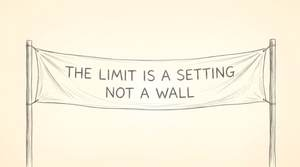
THE ENDCARD, and the film's closing rhyme. The finish banner from shot 1.2b, which was tiny between the trees and unreadable, is now the whole frame with the sentence on it: THE LIMIT IS A SETTING, NOT A WALL. The object that opened the film closes it. 4 percent ink, everything else bare paper.
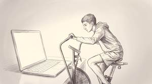
PHASE 3, AND IT IS A COMPOSITE PLATE, NOT A FINISHED PICTURE. THE LAPTOP SCREEN IS A HOLE: it is drawn as bare unmarked paper and Kristijan puts the earlier ride footage into it. Do not animate it as drawn. Him and the screen are both legible in one frame, which is the whole point of the phase: he is racing a recording of himself, and no still we have says that. Same three quarter framing as the runner seeing the finish line, so the two rhyme.
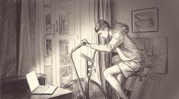
Rejected. The laptop was small and low in the corner and he was looking at the floor, so it read as a boy exercising rather than a boy racing himself. The photographic still was the first reference and its layout was copied. Also far too dark, mean luminance 133 against the film's 200 to 240.
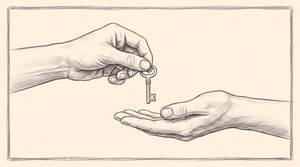
Same drawing with a hand drawn panel border, inherited from the old V7 reference. Artwork ships edge to edge and the frame is its own layer, so the border was cropped out into v2.

INSIDE THE LIGHT. Bare paper edge to edge, 0.03 percent ink, the middle 100 percent blank, with the faintest broken strokes clinging to the four corners and dying within a hand's width. NOTHING IS DRAWN TO STAND FOR LIGHT: no glow, no rays, no vignette. The light is the paper, which is what scene 1 spent its whole length teaching. It reads as a drawing that has stopped rather than a blank file, and it hands straight to phase 8, same emptiness and same corners, with Ganesha forming in the middle of it.
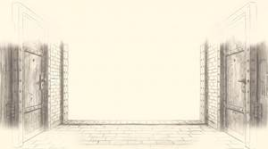
Rejected at 17 percent ink. It kept the whole doorway and just widened the blank centre, because the threshold was the reference and the reference decides the form. THE FIX WAS TO START FROM AN ALMOST EMPTY FRAME instead: v2 was built from the Ganesha plate by removing the figure, and it worked first time. Emptying a full drawing does not work; subtracting one thing from an empty one does.
GANESHA AT FULL PRESENCE, the top of the arc. Ink 2.02 percent against 0.28 on 8.0, every line now present, and it grew the second pair of arms with the axe and noose, which is correct iconography and better than what was asked for. He is 46 percent of frame height, so the move is faint and small, then drawn and larger, then out. Kristijan scales rather than redraws.
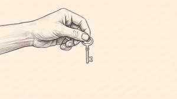
THE KEY, AS A PLATE WITH A HOLE. Coach Brain's hand is drawn and holds the key. THE RIGHT HALF IS BARE PAPER ON PURPOSE: Manan's REAL hand goes there, keyed from the footage, entering from the right with the palm open under the key. NEVER DRAW MANAN, not even a hand. This is the only frame in the film where the drawn world and the photographed one are in physical contact, which makes it the strongest use of the film's founding law anywhere in it. Hold the gap one beat: permission offered and not yet taken.
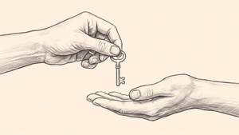
Both hands drawn. Correct as a drawing and wrong for this film: Manan is a photograph, so his hand cannot be drawn. Superseded by v3, which removes the receiving hand and leaves the hole.
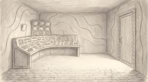
MANAN'S SIDE OF THE ROOM, AND IT IS A PLATE. Same control room as 6.3 from a new angle: console away on the left, screens above it, the closed riveted door on the right. THE WHOLE RIGHT HALF IS OPEN FLAGSTONE WITH NOTHING ON IT, because that is where Manan is keyed in from the grey backdrop footage, walking in through that door. He is never drawn. The chair is gone because Coach Brain is not in this shot yet: Manan arrives, asks what happened, and the answer comes after.
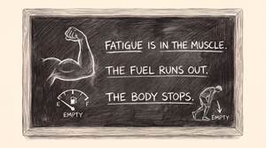
Rejected by Baba. The collapsed runner drawn in chalk at the lower right is out. The board as it stands in 10.0 is the board: the arm, the gauge at empty, and the three underlined lines. Nothing more is added to it.
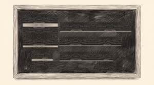
BOARD BUILD STATE 0 of 5. Shows: bare board. These are for the animatic: cut from one to the next in time with the voice so the chalk appears as Manan says the words. SUBTRACTED from the finished board rather than generated, so every state registers to the pixel. There are faint horizontal ghosts on the bare states where the chalk was; they do not read in motion at 5 to 7 frames a second and were left rather than chased.
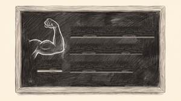
BOARD BUILD STATE 1 of 5. Shows: the arm. These are for the animatic: cut from one to the next in time with the voice so the chalk appears as Manan says the words. SUBTRACTED from the finished board rather than generated, so every state registers to the pixel. There are faint horizontal ghosts on the bare states where the chalk was; they do not read in motion at 5 to 7 frames a second and were left rather than chased.
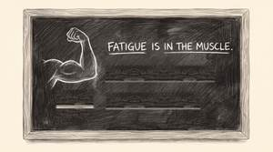
BOARD BUILD STATE 2 of 5. Shows: + FATIGUE IS IN THE MUSCLE. These are for the animatic: cut from one to the next in time with the voice so the chalk appears as Manan says the words. SUBTRACTED from the finished board rather than generated, so every state registers to the pixel. There are faint horizontal ghosts on the bare states where the chalk was; they do not read in motion at 5 to 7 frames a second and were left rather than chased.
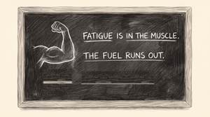
BOARD BUILD STATE 3 of 5. Shows: + THE FUEL RUNS OUT. These are for the animatic: cut from one to the next in time with the voice so the chalk appears as Manan says the words. SUBTRACTED from the finished board rather than generated, so every state registers to the pixel. There are faint horizontal ghosts on the bare states where the chalk was; they do not read in motion at 5 to 7 frames a second and were left rather than chased.
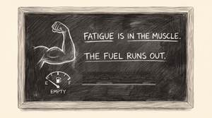
BOARD BUILD STATE 4 of 5. Shows: + the gauge at EMPTY. These are for the animatic: cut from one to the next in time with the voice so the chalk appears as Manan says the words. SUBTRACTED from the finished board rather than generated, so every state registers to the pixel. There are faint horizontal ghosts on the bare states where the chalk was; they do not read in motion at 5 to 7 frames a second and were left rather than chased.
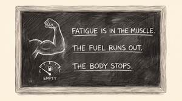
BOARD BUILD STATE 5 of 5. Shows: + THE BODY STOPS. These are for the animatic: cut from one to the next in time with the voice so the chalk appears as Manan says the words. SUBTRACTED from the finished board rather than generated, so every state registers to the pixel. There are faint horizontal ghosts on the bare states where the chalk was; they do not read in motion at 5 to 7 frames a second and were left rather than chased.
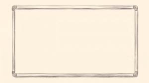
WHITEBOARD BUILD STATE 0 of 5. Shows: bare whiteboard. Cut from one to the next in time with Coach Brain speaking, so the marker appears as he says the words. Subtracted from the finished board so every state registers to the pixel, and the whiteboard erases perfectly clean because the surface is plain.
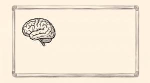
WHITEBOARD BUILD STATE 1 of 5. Shows: the brain. Cut from one to the next in time with Coach Brain speaking, so the marker appears as he says the words. Subtracted from the finished board so every state registers to the pixel, and the whiteboard erases perfectly clean because the surface is plain.
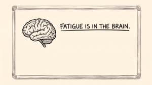
WHITEBOARD BUILD STATE 2 of 5. Shows: + FATIGUE IS IN THE BRAIN. Cut from one to the next in time with Coach Brain speaking, so the marker appears as he says the words. Subtracted from the finished board so every state registers to the pixel, and the whiteboard erases perfectly clean because the surface is plain.
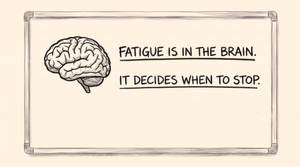
WHITEBOARD BUILD STATE 3 of 5. Shows: + IT DECIDES WHEN TO STOP. Cut from one to the next in time with Coach Brain speaking, so the marker appears as he says the words. Subtracted from the finished board so every state registers to the pixel, and the whiteboard erases perfectly clean because the surface is plain.
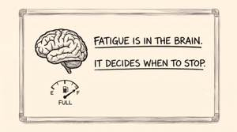
WHITEBOARD BUILD STATE 4 of 5. Shows: + the gauge at FULL. Cut from one to the next in time with Coach Brain speaking, so the marker appears as he says the words. Subtracted from the finished board so every state registers to the pixel, and the whiteboard erases perfectly clean because the surface is plain.

WHITEBOARD BUILD STATE 5 of 5. Shows: + THE FUEL IS STILL THERE. Cut from one to the next in time with Coach Brain speaking, so the marker appears as he says the words. Subtracted from the finished board so every state registers to the pixel, and the whiteboard erases perfectly clean because the surface is plain.
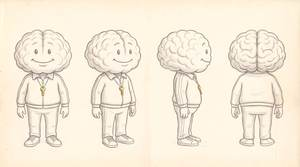
THIS IS COACH BRAIN. Four views: front, three quarter, side, rear. A brain for a head with no neck, wider than his body, two small eyes and a wide simple smile low on the front. Zipped tracksuit with a stripe down each sleeve and leg, mitten hands, white trainers, short and stocky, about desk height. Same proportions in all four so he can be turned. THE KEY ROUND HIS NECK IS GOLD AND IT IS THE ONLY COLOUR IN THE FILM. The chain stays pencil grey right up to the ring. He wears the thing he later hands to Manan, which is why the key frame lands: he has been carrying it the whole time. Colour measures 0.467 percent of the frame. He had no sheet until 30.8.2026 and was being drawn from four inconsistent frames, which is the same failure that cost days on the runner before his face sheet existed.
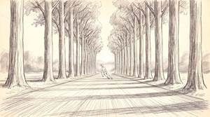
KEY FRAME 1 of 3. THE FILM OPENS HERE. He is tiny and alone in a corridor of trees, the road running away to nothing. Same avenue and viewpoint as shot 1.2b on purpose: this is the place before there is anything to see in it. The figure carries the collapse pose from V7 shot 1.2, so the wide and the close say the same thing.
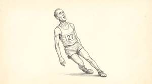
KEY FRAME 3 of 3, AND HALF OF THE FILM'S BOOKEND. His legs have gone from under him and he is falling backwards, one leg folded beneath him, arms dead at his sides, head tipped back. THE POSE COMES FROM V7 SHOT 1.2 at Baba's instruction, replacing an invented crouch that read as neither running nor collapsing. Cut against shot 1.3 phase 1 at the far end of the scene: same man, same frame, one destroyed and one fresh. Frame rate here is the slowest in the film, two to three a second.
The frame as a matte. 2731 x 1536 RGBA. The paper margin and the drawn line are solid, and the window in the middle is transparent, so you drop it straight on top of any frame and it cuts its own window: the artwork shows through and the border and the margin come from this layer. The window edge follows the hand drawn wobble exactly, because it was found by walking outward from the centre of a real drawing until it hit the line, rather than by drawing a rectangle. Cut out of existing artwork, not generated, so it is the same pencil and the same paper as everything it sits on. Move it, scale it, animate it or take it off.
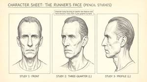
THIS IS THE MAN. Three studies of his head: front, three quarter, profile. Until today the only description of his face in the whole production was nine generic words, so every frame invented him again and he was a different person in each one. This sheet is the lock. The three things that carry him and must survive into every frame are the flattened bridge of the nose, the wide set deep eyes under a straight brow, and the narrow jaw under wide cheekbones. Individual views are cut out in reference/ for building frames from, because a sheet handed to a frame brings its grid with it.
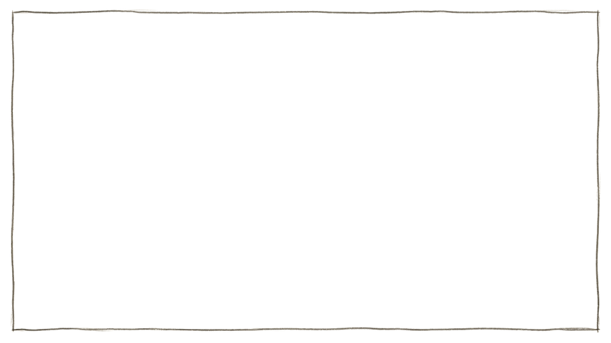
The border line alone, with everything around it transparent. Wrong shape for the job: laid over a frame it drew a line and did nothing else. Kept, and the link still works. Superseded by v2.
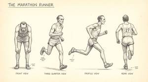
The runner's body, four views: front, three quarter, profile, rear. Lean, about forty five, singlet and shorts, bib 27, worn racing shoes. The face sheet below is the one that holds his identity; this one holds his build and his costume.
The whole film as it stands, four panels to a page, with every line and every frame number. The live action frames now show the real footage from the shoot beside the drawn version, with the clip and the timecode on each. At the back there are two pages of clean footage frames, one per shot, for pulling into tests. This is not a proposal, it is the current version of the document. Superseded by v8. It is not deleted and the link still works, but v8 is the one to read.
The whole film as it stands, four panels to a page, fifty panels, with every line and every frame number. Live action frames show the real footage from the shoot beside the drawn version with the clip and the timecode on each. Superseded by v9, which carries the rebuilt scene 1.
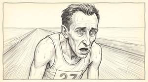
Anything that moves on its own comes to you as three files, never as one picture. This is the pattern, shown with the frame because the frame is already done. The sweat droplets on shot 1.1 arrive the same way: a plate with dry skin, the droplets alone on transparency, and a composite so there is never a question about where they sit. If you need a different split than the one you are given, tick need a breakdown on the key frame and say what you want separated.
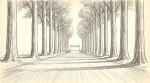
What he sees. His subjective view down the avenue, the finish banner caught small in the gap between the trunks. This is the answer to the question the previous shot planted, and it is what explains the trees: he could not have seen it before, so his exhaustion was honest.
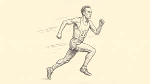
Superseded by the 1-3-A and 1-3-B pair. This was the sprint before the muscle activation existed. The run now begins as a dissolve out of the flayed figure, so phase 1 has to match that pose exactly and this one does not. Kept, and the link still works.
The film was shot in India and this is its thank you. In Hindu tradition Ganesha removes obstacles, and removing an obstacle is the entire subject of this film: the brake is not a wall, it is a setting, and it can be lifted. He sits on top of Coach Brain's console, the mixer of all human energies, with a few small oil lamps beside him, Tamil Nadu in feeling. He is never lit specially, never cut to and never mentioned. Anyone who knows will see him.
A century of settled science, pressed flat onto paper. It is what the film reopens. The stamp is not villainous, it is what happens when an answer is good enough for long enough that nobody asks again. Scene 2.
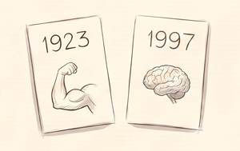
The old answer and the new one, side by side: an arm, and a brain. Fatigue was in the muscle for seventy four years before anyone looked higher up. The film is the gap between these two cards. Scene 7.
Manan's tool and his posture. He is not a student being taught, he is an investigator looking closer at something everybody already believes they understand. It is also the film's only handheld object that crosses between the photographed world and the drawn one. Scenes 1 and 2.
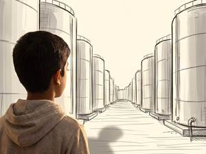
The body as a factory, and the tanks are full. A man says he is empty while his stores stand untouched behind him. Scarcity that turns out to be policy, not supply. Scene 3.
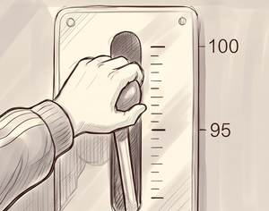
The centre of the whole film in one object. Effort is not a wall you hit, it is a dial somebody set, and it is sitting at ninety five. A wall cannot be moved. A setting can. Scenes 6 and 8.
Recruitment, seen from inside. One muscle fibre fires, then the cluster, then the leg, then the whole body. This is the muscle activation motif, and it is the only thing in the film animated at full frame rate. It appears three times, identical each time. Scenes 1, 5 and 6.
Handed from one palm to another. The brake can be released, but only by someone who has been told it exists. Knowledge as permission, and the reason the film is worth making at all. Scene 8.
The goal was always there and could not be seen. The runner is not weak, he is misinformed: he thinks he has ten kilometres left. Motivation is information. Scene 1.
The dying man. Barely moving, visibly stuttering, heavy posterisation. This is the brake fully on, and it is where scene 1 opens. If it looks broken, it is working.
Everything else in the film. Something is not turning over cleanly. This is the rate the audience learns as normal, which is what makes the other three mean anything.
He runs. Still stepped, but roughly three times the stuck rate. Nothing is explained and nothing is smooth, yet the eye feels him come loose. Same technique, higher rate, and the change alone carries the release.
The muscle activation, and nothing else, ever. Fully smooth. It happens three times in the film and it is the same sequence copy pasted each time: the runner seeing the finish line, Manan on the bicycle, and Coach Brain naming the limit.
KEY FRAME 1 of 3. He is finished, and he believes he still has ten kilometres to run, which is why the exhaustion is total. Head down, eyes on the ground, mouth open. THE CAMERA DOES NOT MOVE across these three: same head size, same position, same three quarter angle throughout. The emotion changes inside the shot without a cut, so this is the start of one continuous move, not three separate shots. Frame rate here is the slowest in the film, two to three a second, barely turning over.
KEY FRAME 2 of 3. The neck straightening, the chin off the chest, the eyes coming up off the ground to the middle distance. Still breathing hard. This is the middle of the move and the audience does not yet know why he is rising.
KEY FRAME 3 of 3. He has seen it. The whole face relaxes: brow smooth, eyes resting easy on something far ahead and out of frame, the corners of the mouth just lifted. Relief arriving, not shock. End the shot here and cut. The audience asks why he changed, and shot 1.2b answers. He is looking OUT of frame on purpose: if he looked at us the cut would not work.
KEY FRAME 1 of 4 of THE MUSCLE ACTIVATION. Deep inside a muscle, closer than any eye could get. One single fibre ignites and throws a hard star of light across the dark field; every other fibre is still unlit. THE DARKEST FRAME IN THE FILM, mean luminance 152 against about 240 everywhere else, and that darkness is what makes the light mean something. THIS SEQUENCE RUNS AT 25 FRAMES A SECOND, fully smooth, against 2 to 7 everywhere else. IT IS USED THREE TIMES IN THE FILM, the same files each time: here when the runner sees the finish line, again when Manan tries the bicycle, and again when Coach Brain names the limit. Never remake it for the other two, or the recognition dies.
KEY FRAME 2 of 4 of the muscle activation. The fire spreads. A dozen ignition points along the same fibres, the fibres beneath them gone pale, the darkness pushed out to the corners. Same diagonal and same hand as key frame 1 on purpose: it has to read as recruitment spreading through one muscle, not as a cut to somewhere new. Measured escalation from key frame 1: mean luminance 152 to 185, bright pixels 16 percent to 33 percent. The light roughly doubles at each of the four beats.
KEY FRAME 3 of 4 of the muscle activation. THE REVEAL. We pull back and what filled the frame turns out to have been one muscle in a leg. Every muscle now alight along its whole length. This is where the audience finally learns the scale they have been looking at, and where the field turns from the darkest frame in the film to the brightest. Measured across the three beats so far: mean luminance 152, 185, 235, bright pixels 16, 33, 71 percent. The leg is at rest rather than braced, which reads as charged and not yet released.
KEY FRAME 4 of 4 of the muscle activation. The whole body, flayed, every muscle alight, caught pushing off into the sprint. The end of the sequence and the peak of the light. DISSOLVE FROM HERE INTO 1-3-A: the two frames are registered on purpose so the skin fades on with nothing moving. Mean pixel difference between them is 9.7 of 255.
PHASE 1 of the run. Same pose, size and position as the last muscle frame, with skin and clothing on: the far end of a DISSOLVE, not a cut. Mean pixel difference between the two is 9.7 of 255. From here the strobe has dropped and the animation runs at 8 to 10 frames a second.

PHASE 2 of the run. Two more attempts at a fully airborne mid-stride were abandoned after four rejects, all of which came back with three legs. Kristijan can interpolate the mid-stride from these two ends, which is what an animator does anyway. If a drawn airborne beat is wanted, reference/RUNNER_STRIDE_AIRBORNE-v2.jpg is the correct pose in the right hand.
Retired. Attempts to rebuild this frame from the real keyed footage did not match the original and were abandoned. The originals are shots 1.5 and 1.6.
Retired. Attempts to rebuild this frame from the real keyed footage did not match the original and were abandoned. The originals are shots 1.5 and 1.6.
MANAN WALKS IN. The runner is still going and the boy steps into the drawn world beside him, magnifying glass up. The film's first crossing of its two worlds: anything real is a photograph, anything thought is a pencil drawing, and here they stand in one frame. Both figures are on the same ground line and the runner is the smaller of the two, which is what makes the boy the subject and the runner the thing being examined.
HE TURNS TO US. Pushed in. Manan holds the glass and the runner is now a pale sketch beside his head, the same man drawn small and faint. He speaks to camera over it. The contrast drops as we push in, so the drawn world recedes exactly as the real one takes over.
THE SAME SHOT WITH THE REAL MANAN. Built from the keyed footage rather than generated: the black backdrop was keyed here by flooding from the frame edge, so his dark hair and black shoes survive intact, then graded warm and lifted toward the cream so he sits in the drawn world instead of on top of it. The generated frame beside it is still the reference for composition. Choose between them. ON THE SCENE AND BREAKDOWN PAGES ONLY, not on the front page storyboard: the generated version stands in there because it reads finished at a glance, and this one is the working material.
THE SAME SHOT WITH THE REAL MANAN. The runner behind him is not a new drawing, it is the previous shot zoomed in and faded back, so the push-in is continuous and the contrast falls as we move closer. Real keyed footage, graded to the paper. Choose between this and the generated one beside it. ON THE SCENE AND BREAKDOWN PAGES ONLY, not on the front page storyboard: the generated version stands in there because it reads finished at a glance, and this one is the working material.
Superseded by v2. Same avenue, but the figure was in the old crouched pose.
KEY FRAME 2 of 3. Close on the feet, which say runner faster than a face does and keep the face back for shot 1.1. One shoe landed flat and heavy with dust lifting, the other dragging low and barely clearing the ground. It also sets the film's method: look closely at the thing everyone thinks they already understand. NOTE: the shoes are modern trainers rather than the 1923 racing shoes on the character sheet. Cheap to correct if the period matters.
Superseded by v2. Rejected by Baba: a half lunge, half crawl that read as neither running nor collapsing. The V7 shot 1.2 pose is the right one and v2 uses it.
The whole film as it stands, four panels to a page. SCENE 1 IS REBUILT: 15 panels instead of 5, opening on the empty avenue and the labouring feet, through the collapse, the face lifting, what he sees, the four beats of the muscle activation, the sprint, and Manan walking in. The film is 60 panels, up from 50. Everything after scene 1 is unchanged but renumbered, so any timecode taken from an earlier read through is now wrong.
Superseded by 8-0-A-v4. Brick, rivets and iron doors, built before the house exterior existed. A factory interior behind a living facade.
Superseded by 8-1-A-v2. Riveted iron piston and machined gauges, built before the house exterior existed.
Superseded by 8-2-A-v3. Riveted iron frame, built before the house existed. Its branching walls were right and were carried forward.
THE CONTROL ROOM, the end of the corridor and the deepest room in the body. A plain rectangular room, flat ceiling, square corners, worn flagstones, and the corridor door standing open on the right with the light still coming through it. THE WALLS ARE SMOOTHED GREY CLAY with shallow winding grooves pressed into them, low and quiet, with long calm stretches between: brainish, not a brain. v1 tried full relief on walls and ceiling and came back a cave. The chair is empty on purpose, this is the room before Coach Brain turns around. GANESHA IS NOT IN THIS FRAME. He is a hand's height in a room sized shot and three attempts failed to hold him, so he lives on the object sheet instead and gets composited.
Superseded 31.8.2026. Shows the riveted iron console. The desk is now grown stone, see 11-0-A-v3, and this sheet would send an animator the wrong way.
Superseded 31.8.2026. Shows the wooden panelled chair. The chair is now a smooth shell on a single stem.
Four studies of the clay wall: flat, an outside corner, the top edge where it meets the plain ceiling and the grooves stop, and the grooves drawn large. THE CORNER AND THE CEILING PANELS ARE THE POINT. Without them anyone drawing a new angle has to guess whether the grooves wrap or stop, and guessing that is exactly how the first control room came back as a cave. Smoothed grey clay, no straight edges, grooves barely raised with long calm stretches between them.
Rejected. It redrew the whole room with four panels laid over it: floor, chair, door and desk base all still there. The room was the only reference, so the room is what came back. A study sheet needs a study sheet as its first reference.
Superseded by 11-0-A-v3. Riveted iron desk and a square screen frame, built before the house exterior existed.
Superseded by v2. Iron sill, riveted frame and rectangular flagstones, built before the house exterior existed.
GANESHA. Seated, calm, palm raised, forming out of the paper rather than sitting on it. Ink coverage is 0.28 percent against 5 to 7 on a full frame, so he is barely there on purpose. THIS IS THE MIDDLE OF THE MOVE, not the end: he scales up out of nothing, through this, and is gone. If he arrives fully drawn there is nothing left to animate. Nothing else in the frame, no lamps, no lotus, no throne, so nothing competes and nothing explains him. Never lit specially, never cut to, never mentioned.
THIS IS THE STYLE FOR BOTH THEORY SECTIONS. RSA Animate, drawn by Andrew Park at Cognitive Media. A hand draws the argument on the board while the voice explains it, in real time, and the drawing spreads sideways across the surface instead of being cut to when finished. That live scribing is exactly what we want: Manan's chalk drawing itself as he speaks, then Coach Brain answering on the whiteboard in black marker. Watch how the hand stays in frame, how pictures and words share one surface, and how the camera drifts across the board rather than cutting. These four were chosen for subject as well as style: the brain, motivation, belief changing outcome, and perception. The most viewed RSA Animates are about economics and education, which look right but say nothing to this film.
THIS IS THE STYLE FOR BOTH THEORY SECTIONS. RSA Animate, drawn by Andrew Park at Cognitive Media. A hand draws the argument on the board while the voice explains it, in real time, and the drawing spreads sideways across the surface instead of being cut to when finished. That live scribing is exactly what we want: Manan's chalk drawing itself as he speaks, then Coach Brain answering on the whiteboard in black marker. Watch how the hand stays in frame, how pictures and words share one surface, and how the camera drifts across the board rather than cutting. These four were chosen for subject as well as style: the brain, motivation, belief changing outcome, and perception. The most viewed RSA Animates are about economics and education, which look right but say nothing to this film.
A man at the end of himself finds a finish line and runs like he just started.
Manan on a real bicycle on a real road. Curious, not convinced.
On the trainer at home, racing a recording of his own best ride.
Nothing left. He cannot go on.
He stops, breathes, relaxes. Out to white. This is the way in.
He is standing in front of a building, and the building is his body. Organic architecture in the manner of Gaudi, never a factory.
He opens the front door and light floods out of it.
The corridor and the rooms behind it, flown through. Each room’s walls are made of the organ it stands for.
He rises out of the light, grows, and is gone. The last thing seen in the body before the brain.
Another door, made of bone, with a small name plate reading COACH BRAIN. He opens it the same way he opened the first.
Inside. What happened? I pulled the brakes on you.
Manan explains what he read. Blackboard, white chalk, drawing itself as he speaks.
We fly at the banner reading THE LIMIT IS A SETTING and pass through it into white. Manan says the line while we are flying.
Out of the white, a drawn hand gives the key to Manan’s real hand. He takes it. Then white, then black. THE END.
Seven classical cards, in the longer version only.
The frame rate is the second language
Nothing in this film runs smooth except one thing. The animation is stepped, and how heavily it is stepped is what the shot is saying. The rate rises as the brake comes off, and the audience feels it in the body without being told. Never smooth between tiers inside a shot: the tiers are steps and the cut is where they change.
Stuck
The dying man. Barely moving, visibly stuttering, heavy posterisation. This is the brake fully on, and it is where scene 1 opens. If it looks broken, it is working.
The default
Everything else in the film. Something is not turning over cleanly. This is the rate the audience learns as normal, which is what makes the other three mean anything.
Released
He runs. Still stepped, but roughly three times the stuck rate. Nothing is explained and nothing is smooth, yet the eye feels him come loose. Same technique, higher rate, and the change alone carries the release.
Alive
The muscle activation, and nothing else, ever. Fully smooth. It happens three times in the film and it is the same sequence copy pasted each time: the runner seeing the finish line, Manan on the bicycle, and Coach Brain naming the limit.
Glossary of symbols
The film says most of what it means through objects. These are the ones that carry weight, what each one stands for, and where it appears. A symbol that comes back is doing work the second time too.
Ganesha — the remover of obstacles
The film was shot in India and this is its thank you. In Hindu tradition Ganesha removes obstacles, and removing an obstacle is the entire subject of this film: the brake is not a wall, it is a setting, and it can be lifted. He sits on top of Coach Brain's console, the mixer of all human energies, with a few small oil lamps beside him, Tamil Nadu in feeling. He is never lit specially, never cut to and never mentioned. Anyone who knows will see him.
Placeholder. It swaps itself for the real drawing the moment one lands in the repository.
The stamp — CASE CLOSED
A century of settled science, pressed flat onto paper. It is what the film reopens. The stamp is not villainous, it is what happens when an answer is good enough for long enough that nobody asks again. Scene 2.
The two cards — 1923 and 1997
The old answer and the new one, side by side: an arm, and a brain. Fatigue was in the muscle for seventy four years before anyone looked higher up. The film is the gap between these two cards. Scene 7.
The magnifying glass
Manan's tool and his posture. He is not a student being taught, he is an investigator looking closer at something everybody already believes they understand. It is also the film's only handheld object that crosses between the photographed world and the drawn one. Scenes 1 and 2.
The tanks
The body as a factory, and the tanks are full. A man says he is empty while his stores stand untouched behind him. Scarcity that turns out to be policy, not supply. Scene 3.
The lever — 95 of 100
The centre of the whole film in one object. Effort is not a wall you hit, it is a dial somebody set, and it is sitting at ninety five. A wall cannot be moved. A setting can. Scenes 6 and 8.
The single fibre lighting
Recruitment, seen from inside. One muscle fibre fires, then the cluster, then the leg, then the whole body. This is the muscle activation motif, and it is the only thing in the film animated at full frame rate. It appears three times, identical each time. Scenes 1, 5 and 6.
email composer · the frame

{kind=link}
{kind=link}
{kind=link}
{kind=link}
{kind=link}
{kind=link}
{kind=link}
{kind=link}
{kind=link}
{kind=link}
{kind=link}
{kind=link}
{kind=link}
{kind=link}
{kind=link}
{kind=link}
{kind=link}
{kind=link}
{kind=link}
{kind=link}
{kind=link}
{kind=link}
{kind=link}
{kind=link}
{kind=link}
{kind=link}
{kind=link}
{kind=link}
{kind=link}
{kind=link}
{kind=link}
{kind=link}
{kind=link}
{kind=link}
{kind=link}
{kind=link}
{kind=link}
{kind=link}
{kind=link}
{kind=link}
{kind=link}
{kind=link}
{kind=link}
{kind=link}
{kind=link}
{kind=link}
{kind=link}
{kind=link}
{kind=link}
{kind=link}
{kind=link}
{kind=link}
{kind=link}
{kind=link}
{kind=link}
{kind=link}
{kind=link}
{kind=link}
{kind=link}
{kind=link}
{kind=link}
{kind=link}
{kind=link}
{kind=link}
{kind=link}
{kind=link}
{kind=link}
{kind=link}
{kind=link}
{kind=link}
{kind=link}
{kind=link}
{kind=link}
{kind=link}
{kind=link}
{kind=link}
{kind=link}
{kind=link}
{kind=link}
{kind=link}
{kind=link}
{kind=link}
{kind=link}
{kind=link}
{kind=link}
{kind=link}
{kind=link}
{kind=link}
{kind=link}
THE BRAIN BRAKE
The Central Governor Theory · Breakthrough Junior Challenge 2026